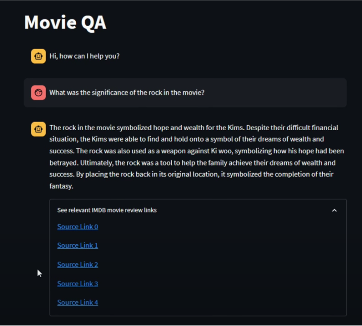

Large Language Models & Natural Language Processing
IntervalTree.rs – Implemented an efficient interval tree in Rust and exposed
PyO3 bindings to deliver a smooth Python interface for
data science workflows. Explore the GitHub repo.
Enhancement to Grouped Query Attention – Developed a novel
weight-based aggregation of key-value heads to improve T5-small summarisation
performance by 2.75% over the grouped query attention baseline.
Explore the
GitHub repo
and the Weights & Biases
report.
SEC Filings Question Answering Agent – Built an end-to-end
system that parses 10-Q and 10-K filings to answer investor
questions about company health. Explore the original
project and the
revamped
finance data LLM repo.
Movie Reviews Question Answering Agent – Built a MongoDB
Atlas-powered QA system. Browse the
code
and watch the
demo.

Movie reviews QA prototype for Parasite.
Terms & Conditions QA – Built during a Google × Lablab AI
hackathon as part of a six-member team. Dive into the
repository, read the
project summary,
or try the
live app.
Terms & Conditions Oracle built during Google × Lablab AI hackathon.
Old days of being a finance bro
Reinforcement Learning
Algorithmic Trading with Google Trends – Leveraged web
search data as state space to improve RL trading performance.
GitHub
·
Medium
Black-Litterman Portfolio Optimisation – Work-in-progress on
applying RL to portfolio construction.
GitHub
FinRL Optimisation Contributions – Authored explainers and
tutorials for hyperparameter optimisation workflows in FinRL.
Article series